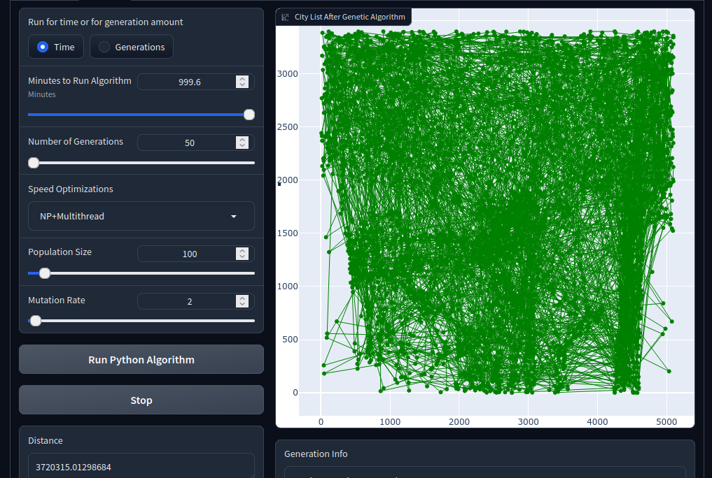

Instructions
Load Cities:
- Use the slider to select the number of cities.
- Click the “Select Cities” button to choose cities and see the original route on the plot.
Python Algorithm:
- Select parameters like runtime, number of generations, and optimization choices.
- Click “Run Python Algorithm” to execute the Python genetic algorithm.
- The result, including the optimized route and details, will be displayed.
Mojo Algorithm:
- Similar to Python, choose parameters for the Mojo genetic algorithm.
- Click “Run Mojo Algorithm” to run the Mojo genetic algorithm.
- View the results in the command line output.
Load cities FIRST before running either the Python or Mojo algorithms
For more information on gradio app deployment see the Appendix.
1 Overview
An application that uses a genetic algorithm for solving the Traveling Salesman Problem written in two programming languages for comparison. The Python implementation, utilizes Numpy for efficient array operations, and includes multithreading and multiprocessing for parallel processing. The Mojo implementation, utilizes custom array classes, unrolling, vectorization, and tiling techniques.
1.1 Command-Line Interface (CLI) and Gradio Integration
Takes input parameters from the command line or Gradio interface, offering flexibility in execution. Gradio integration allows running the algorithm with user-selected parameters through a subprocess.
View Gradio interface source code.
1.2 Genetic Algorithm Implementation
Utilizes functions for initializing a population, selecting parents, creating children, and performing crossovers. Implements a tournament selection method for parent selection. Supports both time-based and generation-based execution, depending on user preference. Incorporates a mutation rate, allowing for controlled exploration. Mutation involves swapping two cities randomly in the city list. Implements Order Crossover (OX1) for creating children with randomly generated crossover points.
2 Python Implementation
2.1 NumPy
NumPy is used for parent crossover operations in the breed3 function(Listing 1), such as creating arrays, boolean indexing, filtering, and concatenation. These operations are often more concise and efficient when performed using NumPy functions resulting in faster execution.
Listing 1. Python Breed Function with NumPy
genalg.py
# Fastest breed function using Numpy
def breed3(parent1, parent2, point1, point2):
1 mid_chunk = np.array(parent1[point1:point2])
2 remaining_elements = np.array(parent2)[~np.isin(parent2, mid_chunk).all(axis=1)]
3 child = np.concatenate((remaining_elements[:point1], mid_chunk, remaining_elements[point1:]))
return mutate(child)- 1
-
Creating Mid Chunk:
parent1[point1:point2]selects a chunk of elements fromparent1between indicespoint1(inclusive) andpoint2(exclusive).np.array(...)converts this chunk into a NumPy array and assigns it to mid_chunk. - 2
-
Boolean Indexing and Filtering:
np.isin(parent2, mid_chunk)creates a boolean array of the same shape asparent2, whereTrueindicates the elements ofparent2that are also present inmid_chunk.all(axis=1)checks along each row if all elements areTrue.~negates the boolean array, soTruebecomesFalseand vice versa. This boolean array is used to filter out rows fromparent2where all elements match those inmid_chunk. The selected rows (remaining elements) are converted into a NumPy array and assigned toremaining_elements. - 3
-
Concatenation:
np.concatenate(...)concatenates the remaining elements beforepoint1, themid_chunk, and the remaining elements afterpoint1. The result is a NumPy array representing the child.
2.2 Parallel Processing
Allows the user to choose between multithreading(Listing 2) or multiprocessing(Listing 3) for creating children concurrently. Uses ThreadPoolExecutor and ProcessPoolExecutor for efficient parallel execution.
Listing 2. Python Multithread Function
genalg.py
#Fastest version of create children using multithreading
def multithread_create_children(parents):
children = []
# sets num of threads based on cpu count
num_threads = os.cpu_count()
#split parent population amound the threads
parent_chunks = np.array_split(parents, num_threads)
#start all threads
with ThreadPoolExecutor(max_workers=num_threads) as executor:
futures = {executor.submit(normal_create_children, chunk): chunk for chunk in parent_chunks}
for future in as_completed(futures):
data = future.result()
children.append(data)
return np.concatenate(children)Listing 3. Python Multiprocess function
genalg.py
# Mulitprocessing version of create children
def multiprocess_create_children(parents):
children = []
# sets number of processes based on cpu count
num_processes = os.cpu_count()
# splits up the parent population into chunks according to the num of processes
with ProcessPoolExecutor(max_workers=num_processes) as executor:
parent_chunks = np.array_split(parents, num_processes)
futures = {executor.submit(normal_create_children, chunk): chunk for chunk in parent_chunks}
for future in as_completed(futures):
data = future.result()
children.append(data)
return np.concatenate(children)3 Mojo Implementation
The breed3 function(Listing 4) is designed for efficient crossover operations. It initializes a child matrix as a copy of the first parent matrix and then iterates over tile sizes of 8 rows in the second parent matrix. Utilizing the isin_matrix_forbools_more function(Listing 5), it identifies elements in the second parent matrix that are not in the designated segment of the child matrix, inserting these elements at the appropriate locations.
The isin_matrix_forbools_more function(Listing 5) performs boolean checks using SIMD operations allowing for a vectorization of the comparisons. The function initializes a SIMD vector of boolean values and iterates over tile sizes of 4 rows in the input matrix. It loads the X values of these rows into a SIMD vector and compares each element with each X value in the second parent matrix tile selected. If any match is found, then it performs a check of full rows(X and Y values) between the input matrix tile and the parent matrix tile. When matches are found the boolean value in the SIMD vector is set to True indicating which elements have matched and where they are located. The function then returns the resulting SIMD vector, which is used to perform the crossover.
Together, these functions leverage vectorization, SIMD operations, and tiling strategies to enhance the performance of genetic algorithm operations, specifically crossover and boolean checks, making them more efficient and suitable for large-scale optimization problems.
Listing 4. Mojo Breed Function
genalg.mojo
# Function to perform a two-parent crossover
fn breed3(inout child: Matrix[type_f64], borrowed parent1: Matrix[type_f64], borrowed parent2: Matrix[type_f64], borrowed point1: Int, borrowed point2: Int) raises -> None:
child = parent1.copy()
var counter = 0
1 for parent_row in range(0,parent2.rows,8):
let bools = child.isin_matrix_forbools_more(point1,point2,parent2,parent_row)
@unroll
2 for i in range(bools.__len__()):
if not bools[i]:
child[counter] = parent2[parent_row+i]
counter += 1
if counter == point1:
counter = point2
elif counter > child.rows:
print('Counter gone over: ',counter)
if counter < child.rows-1:
print("Didn't find a match that actually exists")
counter = 0
mutate(child)- 1
-
Crossover Loop: Iterates over rows of
parent2in tiles of 8 to perform SIMD vectorization comparisons inisin_matrix_forbools_morefunction. For each tile, it determines if the elements are present in the corresponding chunk betweenpoint1andpoint2of the child matrix. - 2
-
Incorporating Elements: If an element in the tile of
parent2is not present in the chunk betweenpoint1andpoint2of the child matrix, it is added tochild. The SIMD boolean vector,bool, generated byisin_matrix_forbools_morefunction indicates whether matches are found and where they are located in the tile onparent2. The counter is adjusted based onpoint1andpoint2to control the crossover points. There’s a check to print a warning if the counter exceeds the size of the child matrix.
Listing 5. Mojo Element Comparison Function
stack.mojo
fn isin_matrix_forbools_more(borrowed self, borrowed start: Int, borrowed end: Int, borrowed val: Matrix[T], borrowed pnt1: Int) -> SIMD[DType.bool,8]:
1 var value_bools = SIMD[DType.bool,8](False)
2 for row in range(start,end, 4):
let loaded_rows = self.x_load_four(row)
@unroll
3 for i in range(value_bools.__len__()):
if any_true[4](loaded_rows == val[i+pnt1,0]):
4 if self[row] == val[i+pnt1]:
value_bools[i] = True
if self[row+1] == val[i+pnt1]:
value_bools[i] = True
if self[row+2] == val[i+pnt1]:
value_bools[i] = True
if self[row+3] == val[i+pnt1]:
value_bools[i] = True
5 return value_bools- 1
-
Initialization: A SIMD boolean vector of size 8 (
value_bools) is initialized with all elements set toFalse. - 2
-
Main Loop: The function iterates over rows of
selfin tile size of 4. For SIMD optimization it loads 4 rows ofxcoordinates at a time usingx_load_four. - 3
-
Element-wise Comparison for X: The function checks if any of the
Xcoordinates in the loaded rows are equal to the corresponding element in thevalmatrix for each of the 8 positions in the tile. If a match is found, then go on to check the fullXandYcoordinates. - 4
-
Full Element-wise Comparison: The function further checks which of the 4 rows of the tile for
selfhave a match in the 8 rows of the tile forval. Where matches are found, the corresponding element invalue_boolsis set toTrue. - 5
-
Result: The function returns the SIMD boolean vector
value_bools, where each element indicates whether the corresponding element was found in the comparison and where it is located.
Appendix
Mojo Language
View Mojo documentation.
Deployment
Source Code
View the source code for the app deployment on the HuggingFace repository.
Gradio App
View Gradio app deployment hosted on HuggingFace.
Deployment Resources
Hugging Face - AI community & place to host ML deployments
https://huggingface.co/
Gradio - Open-source Python library used to build machine learning/data science demos & web applications
https://www.gradio.app/